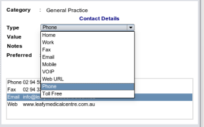

|  |
- As there is a small amount of intelligence built in, EasyGP will recognise if the text represents a mobile phone, web address or email address and set the type combo box accordingly.
- If this cannot happen automatically e.g it is a home phone, then it is important you set the type accurately, and clicking the type combo-box will give you a complete list of options.
|